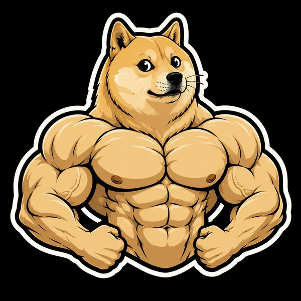

🐾
SWOGE
WORLD
👤
PLAYERS
—
🎲
CASINO VOLUME
—
🎮
ROUNDS PLAYED
—
🏆
WINNINGS PAID
—
👤
☰
👛 My Wallet
🔒 Staking
💰 Deposit
🏧 Withdraw
🎯 Daily Quests
🎮 Other games
🏠 Home

🔥
Burn
$SWOGE
Send to the void · Robinhood Chain
← Launchpad
Connect wallet to burn
Total burned forever 🔥
—
— of supply
Burn your $SWOGE
Your balance
connect wallet
How much to burn (% of your balance)
10%
25%
50%
100%
You will burn
—
🔥 Burn forever
Burning sends your $SWOGE to a dead address (
0x…dEaD
) that no one controls. It's
permanent and irreversible
— it reduces the circulating supply forever.
$SWOGE · Swole Doge 🐶 ·
swoleeswoge.dog
Choose your wallet
Cancel